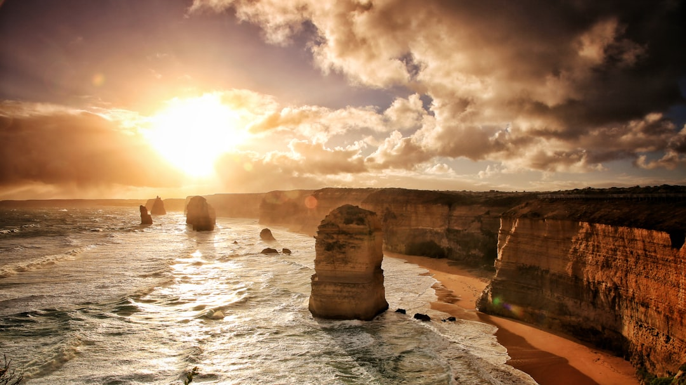

Visual storytelling transforms photography from mere documentation into powerful communication that resonates emotionally and intellectually with audiences. In contemporary branding, this narrative approach distinguishes memorable brands from forgettable ones, creating connections that transcend transactional relationships.
Every photograph possesses potential to tell stories, but intentional storytelling requires understanding narrative structures, emotional triggers, and how visual elements combine to convey meaning. At Salt & Frame Studio, we approach each project as an opportunity to craft compelling narratives that authentically represent brand values while engaging target audiences.
The Foundation of Visual Narrative
Effective visual storytelling begins with clarity about the story being told. What message should audiences receive? What emotions should they feel? What actions should result? These questions guide every creative decision, from composition and lighting to subject selection and post-processing.
Strong visual narratives possess clear beginning, middle, and end points, even within single images. The beginning establishes context and draws viewers in. The middle develops tension or interest through composition and subject interaction. The end provides resolution or provokes continued thought, leaving lasting impressions.
Understanding Your Brand Story
Before crafting visual narratives, brands must articulate their core stories. What values drive the organization? What problems do products or services solve? What emotions should brand interactions evoke? How does the brand differ from competitors? These foundational questions inform visual storytelling strategies.
Our discovery process involves deep conversations exploring brand history, mission, vision, and aspirations. We identify key narrative threads that resonate with target audiences while authentically representing brand character. This groundwork ensures visual stories align with broader brand strategies rather than existing as disconnected aesthetic exercises.
"The most powerful brand stories don't sell products—they invite audiences into experiences and values they want to be part of."
Composition as Narrative Structure
Photographic composition provides the framework through which narratives unfold. Leading lines guide viewer attention through images, creating visual journeys that mirror storytelling pacing. Rule of thirds placement creates balance and interest, while deliberate rule-breaking generates tension that captures attention.
Foreground, middle ground, and background layers add depth and complexity to narratives. Each layer can contribute distinct story elements that combine into cohesive wholes. This dimensional approach encourages viewer exploration, rewarding sustained attention with discovered details.
Lighting as Emotional Language
Lighting profoundly influences narrative mood and emotional impact. Bright, even illumination suggests openness, honesty, and optimism—qualities we leverage in our contemporary Australian aesthetic. Dramatic shadows create mystery and intensity. Soft, diffused light evokes gentleness and intimacy.
Natural lighting particularly excels at authentic storytelling because it connects images to real experiences audiences understand intuitively. The warm glow of golden hour suggests endings or transitions, while harsh midday sun might communicate energy and intensity. Understanding these associations allows photographers to select lighting that reinforces intended narratives.
Color Psychology in Visual Stories
Colors carry cultural and psychological associations that contribute powerfully to storytelling. Blues suggest trust, calm, and stability. Warm tones communicate energy, passion, and approachability. Neutrals provide sophisticated elegance and timelessness. Strategic color use guides emotional responses to visual narratives.
Our coastal-inspired palette combines neutral foundations with oceanic accents specifically to communicate relaxed professionalism and authentic Australian character. These color choices weren't arbitrary—they resulted from understanding target audience associations and desired brand perceptions.
Subject Selection and Casting
The subjects within photographs significantly impact narrative effectiveness. Diverse representation ensures broader audience connection. Authentic expressions matter more than posed perfection—genuine emotions resonate more powerfully than manufactured aesthetics.
When photographing people for brand stories, we prioritize capturing real moments over staged scenes. This requires creating comfortable atmospheres where subjects relax into natural behaviors. The relaxed yet professional studio environment we cultivate serves this purpose, allowing authentic narratives to emerge organically.
Context and Environment
Environments provide crucial narrative context. Clean, minimalist settings suggest modernity and focus. Busy, detailed environments communicate authenticity and real-world application. Natural settings connect brands to environmental consciousness and organic values. Each environmental choice contributes meaning to overall stories.
Our approach favors environments with natural lighting and neutral tones that complement rather than compete with subjects. This allows brands and their offerings to remain narrative focal points while environmental elements add supporting context that enriches without overwhelming.
Sequential Storytelling
While single images can tell complete stories, sequential photography allows more complex narratives. Series of images can show progression, demonstrate processes, or explore subjects from multiple perspectives. This approach works particularly well for explaining services or showing product applications.
Planning sequential narratives requires storyboard thinking. What happens first? How does action progress? What conclusion do you want to reach? This linear planning ensures each image contributes to overarching narratives while standing alone as compelling individual pieces.
"A single photograph captures a moment, but a series of images can capture transformation, journey, and meaning."
Authenticity Versus Aspiration
Effective visual storytelling balances authenticity with aspiration. Pure documentation can feel mundane, while excessive idealization seems unrealistic. The sweet spot shows real life enhanced—situations audiences recognize but presented beautifully. This balance creates aspirational narratives that feel achievable rather than impossible.
Natural lighting contributes significantly to this balance. It grounds images in reality while the careful control we exercise elevates them beyond amateur snapshots. This combination creates professional yet genuine visual stories that audiences trust and desire to participate in.
Details That Speak Volumes
Macro photography and detail shots add narrative richness by revealing textures, craftsmanship, and qualities not apparent in wider views. These images communicate attention to detail, quality standards, and care invested in products or services. For luxury or premium brands, detail photography proves essential for justifying positioning.
When capturing details, consider what story each element tells. Weathered textures might communicate heritage and authenticity. Pristine surfaces suggest innovation and precision. Natural imperfections humanize and create relatability. Each detail choice should reinforce broader brand narratives.
Incorporating Brand Elements Naturally
Obvious product placement or forced logo integration undermines storytelling authenticity. Skilled visual narratives incorporate brand elements organically so they feel native to scenes rather than inserted artificially. Products might be used naturally by subjects. Logos could appear on appropriate items within environments. Colors from brand palettes might dominate scenes naturally.
This subtle approach requires planning and sometimes creative problem-solving, but results in more engaging narratives that audiences don't resist. When brand integration feels forced, viewers disengage. When it appears natural, messages penetrate more effectively.
Emotional Arc Construction
Compelling stories evoke emotional responses. Visual narratives should consider desired emotional arcs. Perhaps you want to begin with a problem that creates concern, progress through solution application showing hope, and conclude with satisfaction showing positive outcomes. This problem-solution-result structure provides satisfying narrative completeness.
Alternatively, you might construct narratives around discovery, transformation, or achievement. Each arc type serves different communication goals. Understanding target audience values helps select appropriate emotional journeys that resonate most powerfully with specific groups.

Cultural Context and Inclusivity
Visual storytelling must consider cultural contexts and embrace inclusivity. Australia's multicultural society deserves representation in brand narratives. Including diverse faces, perspectives, and experiences creates richer stories while demonstrating brand values around inclusion and respect.
Cultural sensitivity also means understanding how different groups interpret visual symbols and narratives. Colors, gestures, and situations carry different meanings across cultures. Research and consultation ensure stories resonate positively with intended audiences without inadvertently causing offense.
Consistency Across Touchpoints
Visual storytelling achieves maximum impact through consistency across all brand touchpoints. Websites, social media, print materials, and physical environments should tell cohesive stories using consistent visual language. This repetition reinforces narratives and builds strong brand recognition.
Creating comprehensive brand guidelines that define storytelling approaches, preferred compositions, lighting styles, color usage, and subject treatment ensures consistency even when multiple creators contribute content. These guidelines should provide direction while allowing creativity within established parameters.
The Role of Typography in Visual Narratives
While primarily visual, photographic storytelling often incorporates text. Typography selection and integration affect narrative impact significantly. Refined, minimal typography complements contemporary photographic aesthetics without competing for attention. Text placement should enhance rather than obstruct compositions.
Consider typography as another layer of storytelling rather than mere information delivery. Font choice communicates personality. Size hierarchy guides attention. Spacing affects readability and emotional impact. Thoughtful typography integration strengthens overall narratives.
"Great typography whispers where lesser typography shouts, allowing images to speak with full voice."
Measuring Storytelling Effectiveness
Visual storytelling success extends beyond aesthetic appreciation to measurable outcomes. Engagement metrics show whether stories capture attention. Conversion data reveals whether narratives motivate desired actions. Brand perception research indicates whether stories communicate intended messages.
Qualitative feedback through surveys, interviews, or social comments provides insight into emotional responses and story comprehension. This feedback loop informs ongoing refinement, helping brands develop increasingly effective visual narratives over time.
Evolving Stories Over Time
Brand stories shouldn't remain static. As organizations grow, markets shift, and audiences evolve, visual narratives must adapt while maintaining core identity. This balance between consistency and evolution challenges brands to stay relevant without confusing audiences through dramatic reinventions.
Regular content audits identify which story elements continue resonating and which need refreshment. Gradual evolution maintains brand recognition while preventing stagnation. This approach mirrors how individuals grow and change while retaining fundamental character—natural progression rather than identity crisis.
Practical Steps for Better Visual Storytelling
To improve visual storytelling, start by articulating your brand story in writing. What are you about? What do you stand for? What transformation do you help create? With clarity on these fundamentals, develop a visual style guide defining how stories should look—color palettes, lighting approaches, composition preferences, and subject treatment.
Plan shoots with specific narrative goals rather than hoping stories emerge accidentally. Create shot lists organized around story beats. Brief photographers and subjects on intended narratives so everyone contributes toward unified visions. Review results critically, asking whether images effectively communicate intended stories.
Conclusion
Visual storytelling through photography represents one of contemporary branding's most powerful tools. When approached with intention, understanding of narrative structure, and commitment to authenticity, photographs transcend mere documentation to become compelling stories that connect emotionally with audiences, communicate brand values, and motivate engagement.
At Salt & Frame, we believe every brand possesses unique stories worth telling through thoughtful visual narratives. By combining contemporary aesthetics, natural lighting techniques, coastal-inspired warmth, and deep understanding of storytelling principles, we help brands craft visual identities that don't just look beautiful—they communicate meaningfully, resonate authentically, and drive measurable results.
Ready to Tell Your Brand Story Through Compelling Visual Narratives?
Let's craft photography that connects emotionally and communicates powerfully.
Start Your Project